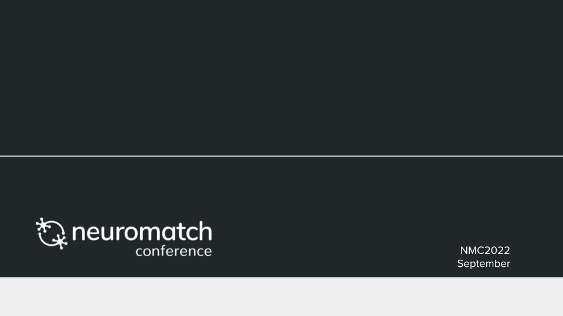

Bisected graph matching
Contents

Bisected graph matching#
Benjamin D. Pedigo - Johns Hopkins University#
Graph matching (GM) for connectomics#

Example bilateral neuron pair Eschbach et al. 2021

Bisected graph matching (BGM)#
We adapt the FAQ algorithm (Vogelstein et al. 2015) to solve BGM
BGM increases matching accuracy#

Extensions to BGM: multiplex networks#


Summary#
Matching approaches can help find paired neurons between connectomes
BGM uses more of the data to improve matching between hemispheres
Manuscript on bioRxiv: tinyurl.com/neuromatch-bgm
Code for all experiments: github.com/neurodata/bgm
Matching algorithm: github.com/microsoft/graspologic
Contact: bpedigo@jhu.edu
Acknowledgements#
Co-authors: Michael Winding, Carey E. Priebe, Joshua T. Vogelstein
Funding: NSF GRFP, NSF Career, NIH BRAIN Initiative, Microsoft Research